Or - bending a Tesla Wall Connector 3 rev 26.18.0 to Our Will on a non-Export Solar Installation so my Rivian Charges Exclusively on Excess Solar.
Before you read on - this is a personal account of a hobby project, not a how-to guide and not professional or electrical engineering advice. If you attempt anything like it, understand that you will be altering how your energy system and/or wall connector operate. That can carry real risks — electric shock or fire, damage to your wall connector, Powerwall, vehicle, or home wiring, and possible voiding of warranties or violation of your service, interconnection, or terms-of-service agreements. Work involving mains wiring should be done by a licensed electrician.
The account that follows is provided as-is; it may contain errors or be out of date. You alone are responsible for deciding whether to accept these risks — if you’re not comfortable with them, don’t start. I take no responsibility for the accuracy of anything here, or for any harm to you, to anyone else, or to any property arising from actions taken based on it.
Not affiliated with or endorsed by Tesla, Rivian, PG&E, or Olimex; all trademarks are their owners’.
This blog is written by a human — namely, me.
I have an underutilized non-exporting Tesla-centric solar installation capable of generating over 13 kW usable at peak; I’d like to make it charge my Rivian solely with excess solar - but this is not supported through any factory configuration of the Rivian or Tesla system. I set out to create a hardware-based solution to control the Tesla Wall Charger 3 firmware rev 26.18.0 to provide solar-aware charging.
This requires (a) successfully configuring and connecting to the Tesla Wall Connector via RS-485 (b) figuring out how to know how much solar is available in a non-export system which is tricky and (c) implement charge control, including figuring out how to nudge DOWN the charge current, which has so far stymied other members of the community. Thanks to other generous people in the community, I accomplished (a); I came up with an adequate solution for (b) that I share here, and I more or less solved the missing part of (c) at least for my Rivian. Olaliv, Tomiczech, Klangen82, and others have established a good charge control scheme, but charge current reduction logic on 26.18.0 firmware seemed elusive. My solution works for my vehicle, but the technique depends among other things on how quickly the vehicle’s onboard charger reduces charge current from some arbitrary nonzero level down to zero, which likely varies by manufacturer (the J1772 spec imposes a deadline, but not a slew rate).
More TL;DR (yes, it’s practically The Life and Opinions of Tristram Shandy, Gentleman at this point…)
It also bears mentioning that I’ve worked on this project in small chunks over the span of two months - oftentimes with days or even weeks between sessions. I’m rarely able to leave my car plugged in and charging all day, for the sake of a “clean” charging session, because I need to use it. And sometimes I’m away from home for long stretches. So if it seems like I approached this project in a cavalier manner, let loose ends pile up, and totally misused Claude Code - it’s because that’s exactly what I did.
And I’m under no illusions that this is a Great Work of Computer Science or Clever Electrical Engineering, or even Literature - and it’s mostly not my work to begin with; you can find almost all of this online here and there. But I learned a few things that other people might want to know, and I want to share them all in one place.
There is a LOT of detail here that people familiar with non-export solar, the Tesla Wall Connector, RS-485/MODBUS, Teslemetry, the Rivian API, etc, can ignore - but I’m including it here for folks who are curious. If you only want to read the TL;DR of each section, I’ve added hyperlinks that let you DR the TL.
And here’s the first one:
I recently expanded my solar power installation at home. It’s a little bit complicated - my house has 400 amp service from Pacific Gas & Electric in Northern California, on a “split panel” - it’s sort of like having two 200A services on one meter. Power does not flow across the two halves of the split.
As a result, I have two independently operating solar panel and energy storage installations - one new, one preexisting. The preexisting system is based around two Tesla Powerwall 2 units for storage (2x 13.5 kWh = 27 kWh), and is grandfathered into PG&E’s advantageous (and superseded) NEM 2.0 tariff which pays pretty well for exported power. I expanded that preexisting system to the limit of the roof space and circuit capacity available. We’re not going to discuss that system much here.
As for the new system - which, unfortunately, due to circumstances too irritating to expand on here, I wound up overbuilding - it’s non-export. In other words, PG&E not only won’t compensate me for excess solar produced by this system, they won’t let excess solar from this system flow onto the grid. At all. Not one electron.
The new system has a total nameplate generation capacity of 17kW, and uses two Tesla Powerwall 3’s for energy storage - this will be important later. As with the PW2’s on the other system, the PW 3’ offer the same 2x 13.5 kWh = 27 kWh of energy storage, but the PW 3’s can support higher peak output power - https://energylibrary.tesla.com/docs/Public/EnergyStorage/Powerwall/3/Datasheet/en-ie/Powerwall-3-Datasheet-IE.pdf
The new, non-export system runs a number of loads, but most of the time, it’s not using all of its potential generation capacity - and frequently, it’s hardly using any. A major exception is: when I’m charging my electric vehicle, a Rivian R1S. I have a Tesla Wall Connector v3 (the universal dock kind) - https://energylibrary.tesla.com/docs/Public/Charging/WallConnector/Gen3/Install/1PNA/en-us/GUID-86D9DE81-BB5F-4CAD-9E2D-23AAAC475A20.html
So how much solar are we talking about from the non-export system?
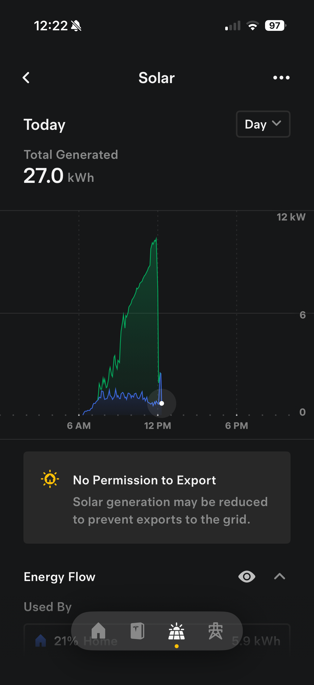
(Once those Powerwalls are full - THAT’S IT - no more production if there’s no load)
We can calculate potential output from first principles, starting with the 17kW nameplate capacity. The panels are mounted flat, on a flat roof. So there’s cosine loss from the flat mounting - specifically, 3.5% cosine loss (cos(~15 degrees) = .965). At solar noon on the summer solstice, and accounting for the cosine loss, temperature loss, DC system losses, and inverter (in)efficiency, we’re somewhere around 13 kW - https://pvwatts.nlr.gov
Turns out the Rivian’s max charge rate is only 11.5 kW; moreover, the circuit the wall connector is on is only 50A, so 40A usable = 9.6 kW at 240v.
So, great! I should be able to plug in the Rivian, set it to charge on solar only, and still have 13 kW - 9.6 kW = 3,400 watts left over to burn some toast or something, presuming it’s June 20th and sunny… right?
Wrong.
To start with, Rivian doesn’t have an inbuilt “charge on solar” function (how would it know, after all…)
OK, how about the Tesla Wall Connector / Powerwall installation? Tesla offers “charge on solar” right? But that’s a feature of the Tesla vehicle when connected to a Tesla energy system - https://www.tesla.com/support/tesla-app/charge-on-solar .
Maybe it’s not so bad to just plug in the Rivian and let it use all the solar available at any given moment, pulling from the grid when necessary? Maybe manually adjust down the Rivian charge rate (Rivian will remember max charge rate on a location-by-location basis) to try to stay below available solar on clear days?
That sounds ok in theory, but in practice, I get this:
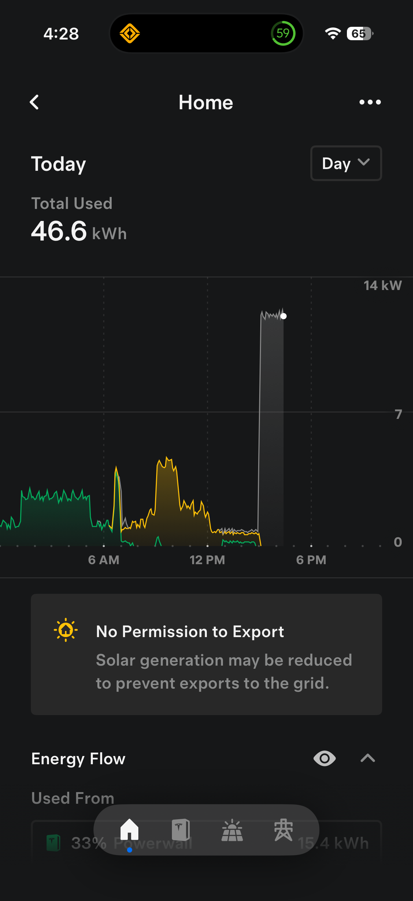
It seems as though the logic in the Tesla setup doesn’t like to power the car partially on solar - it’s all, or nothing - with “nothing” meaning we pull up to 9.6kW from the grid. AND sometimes commencing a charge “crashes” solar, dropping solar production to nothing. Pretty poor behavior.
Something needs to be done - some automation to control the Rivian’s charge rate using available control paths and telemetry…
…a “research” project!
I’m using an Olimex ESP32-PoE-ISO board, MS VSCode with PlatformIO’s Arduino-ESP32 framework w/ RTOS, Claude Code, and a TIG stack.
(*) ;-)
I’ve had some success (and fun!) with IoT-related projects based on Olimex’s single-board platform built around the Espressif ESP32 SoC. The ESP32 is easy to program - there are a lot of existing tools and libraries that target it, and you can find ESP32-based prototyping platforms that expose quite a few I/O pins and with good connectivity options.
After completing two other projects - one to monitor an ultrasonic water flowmeter over RS-485, another to monitor septic pump run cycles (with just a current switch), I’ve settled specifically on Olimex’s ESP32-PoE-ISO SKU - https://www.olimex.com/Products/IoT/ESP32/ESP32-POE-ISO/
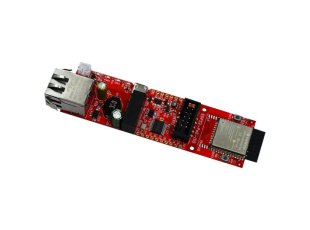
This Olimex unit supports both WiFi and Ethernet, and is powered by your choice of micro-USB, PoE, or direct connection to the power rails. The “ISO” part of the name denotes the 3,000v galvanic isolation between the PoE Ethernet part and board’s power supply; seems like cheap insurance. I strongly favor wired Ethernet and PoE wherever feasible, which endows connected devices with the simplicity of a single physical connection and worst-case-scenario remote reboot (“have you tried turning it off and back on again?”). Olimex offers other versions of the same part, including one with an external wifi antenna connector, and larger, more capable boards with Bluetooth, I/R, CAN connectivity, etc.
As for software, PlatformIO’s ESP-IDF-based Arduino-ESP32 framework, which includes FreeRTOS, has everything we need - in a convenient Visual Studio plugin. There are tons of Arduino-ESP32 compatible libraries. All the code is C++ - almost entirely just plain C idioms.
For monitoring, I have had for some time a Telegraf / InfluxDB / Grafana (TIG) setup that I am happy with. These IoT projects are an easy fit.
Last - and not least, really the star here - everyone’s best friend, Claude. I would not have completed any of these projects were it not for Claude - getting over the energy barrier of learning this or that random configuration detail, etc, when these projects are competing for time with The Rest of Life. Especially grungy stuff - I don’t want to commit one single (human) neuron to generating Grafana dashboards or writing InfluxDB queries. To keep this PG-rated, I’ll keep my lips zipped about InfluxDB’s query language “Flux”…
Claude did great generating real-time routines, protecting variables with mutexes and critical sections as necessary, etc. Probably :-)
For the first of these projects - the septic pump sensor - I instructed Claude to generate a web server that Telegraf could poll for telemetry (on “/metrics”), enable configuring runtime controls via HTTP GET, and handle the hardware sensor by polling the relevant GPIO pin. After iterating for a few hours spread over several days, I had a working setup. Claude’s code is straightforward, although as you likely have experienced, it can be hard to keep Claude on track regarding the high-level design and invariants, or preventing code sprawl. I run Visual Studio and Claude Code in a container to help place some limits on the coding agent’s reach; this slows things down a little since I have a manually-triggered process to transfer external information in (e.g. syslog, influx data for debug purposes) and to allow new binaries to come out. Obviously, I’m not running a dozen “individual contributor” agents under the supervision of “project lead” agents, with agent management frameworks, long-running coding sessions, and so on…
The Olimex unit is small - Olimex will sell you a little 3D-printed enclosure that measures 115mm x 33mm x 22mm (4.5” x 1.3” x .9”) https://www.mouser.com/en/ProductDetail/Olimex-Ltd/BOX-ESP32-POE-ISO-EA-F?qs=%252BXxaIXUDbq1soqiVeHsY1g%3D%3D . For my septic monitor project, that’s small enough to tuck within the existing weathertight septic control enclosure; all I needed was a suitable cable gland to enable the PoE connection, and some direct-burial ethernet cable.
I duplicated that overall design for the water flow monitor, adding a MAX485 RS-485 transceiver (https://www.amazon.com/dp/B00NIOLNAG):
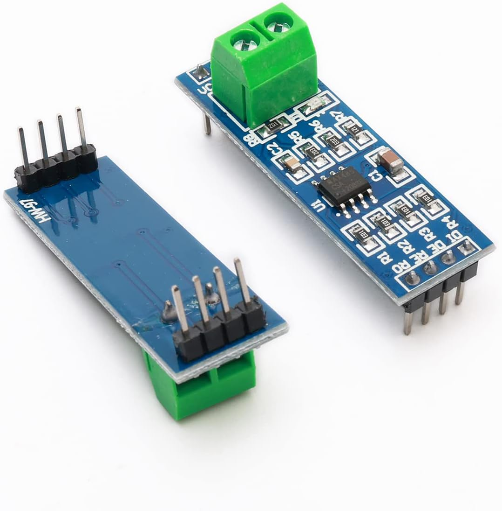
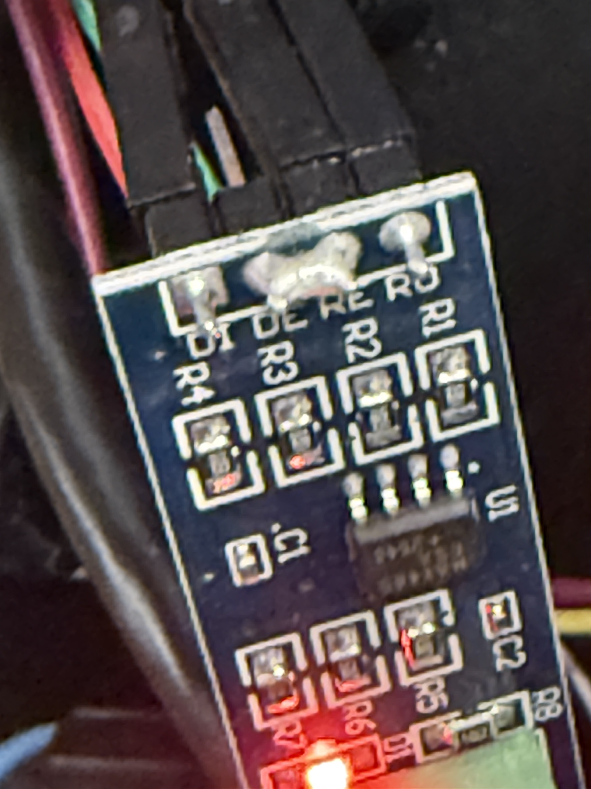
(and discovering along the way that the MAX485 I bought is not reverse-polarity-friendly… buy a bunch; they’re cheap…)
That all worked great, so I figured I’d use the same setup for the solar charge controller. Even if all I needed is a python script, I want a hardware device that can be controlled with some physical buttons driven by the Olimex, so I can tell the unit to “charge on solar” or “just charge now” or maybe “charge on either solar or off-peak.” I have a larger enclosure in hand to accommodate the future physical UI, but haven’t built that yet.
June 4, 2026 or thereabouts…
I thought this would be an easy, all-software project that just called some web interfaces. As it turns out, I wasted an enormous amount of time trying and eliminating every possibility I could think of including the Tesla cloud API and the unofficial Rivian cloud API from Kaedenb, leaving me with only direct RS-485-based control of the Tesla Wall Connector. Much later, I figured out that wasn’t true - I made a mistake; the Rivian API approach DOES actually work (see Ostap Korkuna’s project) - but at that point, I was way down the Tesla WC + RS-485 path.
Sometime in early June - I haven’t been taking great notes (or asking Claude to take them for me) until recently - I embarked upon this Rivian charge control project.
I already had a spare Olimex board, so I could get started with working code. Flush with enthusiasm, I also purchased some cool LED buttons (https://www.adafruit.com/product/481) and a digital display (e.g. for amperage or kW being delivered) (https://www.adafruit.com/product/2154) - this is all within the power budget that PoE can deliver to the board. Spoiler alert - it’s August now, and those parts are still sitting in their original packaging…
First idea - Rivian has a cloud API… so I figured I’d set things up such that whenever the Rivian is at home, it will be subject to charge control logic driven by the microcontroller, and effected at the vehicle through the Rivian API. The Rivian API provides GPS coordinates of the vehicle, so a geofence is easy.
First step - authenticate to the Rivian API and run some experiments.
The Rivian API is GraphQL based; there are few user-contributed wrappers over graphql; I used Kaedenb’s rivian-python-api, which was a huge help.
Authentication took some trial and error; I wasn’t taking notes, but somewhere I - or Claude - was misinformed about how Rivian authentication works; seems this may have changed recently with Rivian requiring 2FA for many interactions with the Rivian app - and indeed the API.
Turns out you need to send four values with your POST to Rivian’s GraphQL gateway, plus you’ll need your userid and password - once every six months, currently.
The first two tokens - csrf and app session - are short-lived, and generated without end-user authentication.
With those session IDs in hand, and along with your Rivian userid and password, you can call rivian-python-api’s authentication method. You’ll get back a 2FA challenge; my python script is set up to read the userid and password from the terminal, then prompt for the 2FA code. Meanwhile, Rivian will send your 2FA code to you. The result is your user session token, which is long-lasting. So you’ll want to save that someplace safe where your automation can refer to it later.
Sources:
Rivian GraphQL Schema
I also learned the hard way that Rivian’s GraphQL schema is not super-uniform. Specifically, various queries take the vehicle identifier as a variable, and different queries expect the variable named differently. Some operations want the variable called “id”; if you pass “vehicleID” (or “vehicleId”), the query fails with GRAPHQL_VALIDATION_FAILED instead of returning data. And vice-versa. For vehicle-state queries, the variable is “id”.
So now the fun part - let’s control vehicle charging.
There’s a GraphQL query - “getLiveSessionData” - this does not seem to return power information for third-party (non-Rivian) chargers. Hmmm.
There’s also an “Update Wallbox” - but I don’t have a Rivian wallbox. So that’s not going to help me.
Here are all the fields that I queried from Kaedenb’s wrapper for Rivian’s mobile GraphQL API, grouped by GraphQL operation. Everything here appears to be READ-ONLY except the charging schedule, and there is no obvious “set amperage right now” call:
Query: GetVehicleState (vehicleState(id:
| Field | Meaning | Notes |
|---|---|---|
| batteryLevel | state of charge (%) | useful! |
| batteryLimit | charge-limit target (%) | |
| chargerState | charging_active / charging_complete / etc. | plug+charge state |
| chargerStatus | charger connection status | |
| chargePortState | port open/closed | |
| chargePortLatch | latch engaged? | |
| timeToEndOfCharge | estimated minutes remaining | can be used as a rate proxy |
| powerState | vehicle power state (ready/sleep/etc.) | |
| distanceToEmpty | range remaining | |
| remoteChargingAvailable | can charging be commanded remotely? | |
| gnssLocation | latitude / longitude (+ timeStamp) | enables geofencing |
Query: getLiveSessionData(vehicleId)
| Field | Meaning | Notes |
|---|---|---|
| vehicleChargerState | charger state for the active session | |
| power | live charge power (kW) | Seems empty on a third-party (non- Rivian) charger — I can’t read delivered power. |
Query: GetChargingSchedule (getVehicle -> chargingSchedules)
| Field | Meaning | Notes |
|---|---|---|
| chargingSchedules[] | startTime, duration, amperage, enabled, weekDays, location{lat,lon} | read the schedule |
Mutation: setChargingSchedules (getVehicle -> chargingSchedules)
| Field | Meaning | Notes |
|---|---|---|
| chargingSchedules[] | writes amperage, enabled, weekDays, startTime, duration, location | the amperage control applies to the whole schedule. |
Other queries seen (session history / status; not used for control)
getCompletedSessionSummaries, getLiveSessionHistory, getSessionStatus
There’s a charge schedule - maybe write to that?
Ostap Korkuna has EXACTLY such a project! https://github.com/ostap-korkuna/rivian-charging-automation
However… I could not get this approach to work when I first tried it; I couldn’t get charge level to change mid-session. So I gave up and moved on. Upon re-trying Korkuna’s approach while writing this blog post just now - well, it works now! IDK what I was doing wrong before. So now I have a second option for charge control. I’ll continue this story down its original path towards using the Tesla Wall Connector to control charge rate, but maybe later I can add an update, based on using the Rivian API.
Even if I’m not using the Rivian API to set charge current, being able to read from it lets me see current vehicle state-of-charge, which can be useful. Claude was able to generate code for the ESP32 to directly authenticate to Rivian’s GraphQL endpoint for purposes of querying the API for vehicle SOC. I feed the ESP32 valid Rivian session identifiers via HTTP so they aren’t hardcoded anywhere. The user session identifier will need to be refreshed once every six months or so by means of a python script.
Prior to this project, I’d already noticed Tesla’s evolution away from encouraging or allowing consumer control (or even access) through local APIs - first through wifi endpoint lockdown, and, based on my new Powerwall 3-based setup and in contrast to my first Powerwall in a previous home ten years ago, the apparent complete lack of any local network connectivity. It looks like all the telemetry for my PW3 traverses a cellular modem in the PW3 gateway, or device, or both. Maybe someone reading this will know how this all works nowadays.
The Gen3 Wall Connector itself, however, does sport a local wifi-based web server - but there’s no control option; it’s read-only - you can read about it in the home automation community at https://community.home-assistant.io/t/tesla-wall-connector-gen-3-restful/311670/9 .
We’ll come back to the WC3’s local web server later…
If you have a Tesla vehicle, a PowerWall, or a Tesla Wall Connector and you aren’t familiar with “Teslemetry” - check it out. Tesla has made it increasingly difficult for individuals to access their cloud APIs - there’s rate-limiting, for one thing. Teslemetry offers subscription-based access to their front end to the Tesla fleet API; the Teslemetry API is easy to integrate.
I already subscribe ($9/month) to Teslemetry to monitor my solar production and powerwall behavior; perhaps Teslemetry offers some control options to directly or indirectly influence the current that the Wall Connector produces?
No dice. If I had a Tesla - well, I could, apparently, control its charge rate through the fleet API. One configuration you CAN apparently write to is the Powerwall configuration - it might be possible manipulate to influence the competition between the vehicle and the powerwall, thereby indirectly controlling how much excess solar flows to the wall connector. Seems like a mess, doesn’t really allow complete control, and might have unpredictable results.
So without being able to directly command the Rivian to charge at a particular rate, or being able to control the energy system or wall connector via the Tesla fleet API (directly or through Teslemetry), we’ll have to tell the Tesla wall connector what to do.
I found the ESPHome thread wherein Olaliv, Tomiczech, and others explain how to implement charge control to emulate a remote meter talking to the Tesla Wall Connector’s RS-485 connection. I fail to fully block firmware updates and wind up on the dreaded post-26.2.2 firmware lineage. I overcome the rumored-but-nonexistent challenges of Tesla One, but wind up stymied with some kind of handshake problem preventing recognition of my ESP32 as a remote meter.
Playing Power Games - Direct Local Control of The Tesla Wall Connector
By June 11th, I’d eliminated from consideration every path. Except one.
The very sharp folks in the ESPHome forum - in particular, olaliv, tomiczech, and Klangen82 - identified the Tesla Wall Connector’s RS-485 interface as a potential control channel.
The WC3 (and perhaps previous WC generations) can talk to a “Remote Meter” (https://energylibrary.tesla.com/docs/Public/Charging/WallConnector/Gen3/Install/1PNA/en-us/GUID-1DFDCC5C-E5D5-4CFB-AD80-CEE26E822604.html) over the RS-485 connection. The idea is that remote meter is attached to a CT (current transformer) on the supply from the service entrance to the home’s main panel; the CT/remote meter/wall connector combination can then modulate how much energy is sent to a charging vehicle so as to keep the house’s total load below the home’s electrical service rating. This enables installation of an EVSE / wall connector in homes that might not otherwise have enough service rating headroom for one; the remote meter will work with the Tesla Wall Connector to prevent current draw in excess of the limit.
The insight is - what about “pretending” to be a remote meter, and telling the wall connector how much it can draw?
There are some subtleties here.
The first is - Mode of Control.
The remote meter - a Neurio unit, for example - doesn’t just tell the WC “charge at X amps” - instead, it tells the WC how much energy the house is using, and the WC can compare that to its record of the service panel limit, its record of its own circuit limit, and the current it’s already feeding to the EV, if any. The WC then allocates any excess available amperage to the vehicle, if the vehicle is asking for it.
Olaliv and others on ESPHome figured out that this control logic can be used to directly control the WC’s output.
The straightforward way to do this is to configure the WC such that the “Max Conductor Limit” (house/service panel limit, we’ll call it MCL) is exactly the same as the WC’s own circuit. These are two separate configuration parameters; normally they would be very different values, with MCL on the order of 100A (whatever the house’s limit is) and the WC’s circuit maybe at 40A or 48A.
But since there’s not really a remote meter monitoring the house’s load and our goal is to convince the wall connector that it needs to limit the vehicle charge current, we set MCL amps = WC amps, and then do some subtraction. If we want the vehicle to charge at “target” amps, and the car is currently drawing “instantaneous_draw” amps, then we should inform the wall connector that we are at “synthetic_load” amps = “MCL - (target - instantaneous_draw)”. The WC then believes the house is drawing “synthetic_load”, which it subtracts from its configured MCL to see how much headroom there is, which it will then serve to the vehicle:
headroom = (MCL - synthetic_load + own live current) where synthetic_load is per our algorithm
headroom = (MCL - (MCL - (target - instantaneous_draw)) + own live current) (by the formula above)
headroom = (target - instantaneous_draw + own live current) (by subtraction)
So presuming “instantaneous_draw” which we get from pinging the WC, and the WC’s “own live current” are equal, then:
headroom = target
We will see later that when our idea of the WC’s instantaneous draw (which may be stale) and the WC’s own (perfectly fresh) measurement diverge, bad things happen.
Anyway, that’s the theory.
Olaliv (IIRC) found that, in practice, commanding the WC to increase the rate in large quanta just doesn’t work; Olaliv had to “nudge” the charge rate up or down by a smaller amount. (But… see below re Wall Connector firmware revision)
So that’s the basic control logic - as the ESPHome community demonstrated, clean in theory, fussy to actually implement into a control algorithm.
The second subtlety is - Wall Connector firmware revision.
ESPHome and other fora have a lot of information about what approach works with which firmware revision - and generally, the older, the better… specifically, Wall Connector 3 versions prior to v26.2.2 seem to be manageable through olaliv’s “small nudge” method, but post-26.2.2, control through this path no longer seems to work smoothly - in particular, attempting to reduce charge rate.
If the WC is provisioned onto a wifi network, the firmware version can be read at
My wall connector had never been connected to the internet - my installer didn’t bother commissioning the connectivity, so its firmware came from the factory maybe two years ago. So great! I have - or had (a little foreshadowing there…) a pre-26.2.2 unit.
So to prevent an automated upgrade and ensure I stay below v 26.2, I configured my firewall to block:
And went about configuring the device onto my network - because we’ll need to be able to read a timely instantaneous charge level off the WC’s “vitals” endpoint (
Within minutes - I can’t remember exactly what I was doing, but I may have reset the WC’s circuit breaker sometime during the process - my WC had UPDATED TO FIRMWARE 26.18.0!
So: (insert cartoon expletive symbols) - now I’ve lost the one remaining clear path to charge current control. What’d I do wrong? Misconfigured the firewall? Download came from some other domain? Something else?
After regaining my composure, and thinking about olaliv, tomiczech, and Klangen82’s research, I decided to forge ahead anyway. A little research indicated that the remote meter / neurio configurations still seem to be officially supported by Tesla. If remote meter can still control the Wall Connector - well, there has to be a way.
Just to prevent further accidents, I blocked all internet traffic to the WC. I can query from my local network, but that’s it.
Taking stock - we have a… potential… means of controlling the v3 Tesla Wall Controller so that the Rivian charges on excess solar - provided we also have accurate data on how much current is flowing to the car at the moment, and how much excess solar is currently available.
By June 12th, it was time to wire up the RS-485 connection to the Wall Connector, and configure the WC to talk to it.
Some internet research suggested that my installer would have to “unlock” or somehow enable a configuration interface for the WC to allow me to set up with remote meter / Neurio connection. Or that you had to obtain the “Tesla One” app and be authorized to use it. THIS IS ONLY PARTLY TRUE. I reached out to my installer, and they pointed out that “Tesla One” is on the app store, and anyone can use it.
“Tesla One” is not very complicated, but it’s a pain in the neck to attach Tesla One to the WC… you need to be physically near the WC and join the app to the WC’s captive wifi - which, of course, disconnects the WC from whatever network you had it on.
Once I got there, I scrolled through the options to “Remote Meter” and discovered… “not detected”.
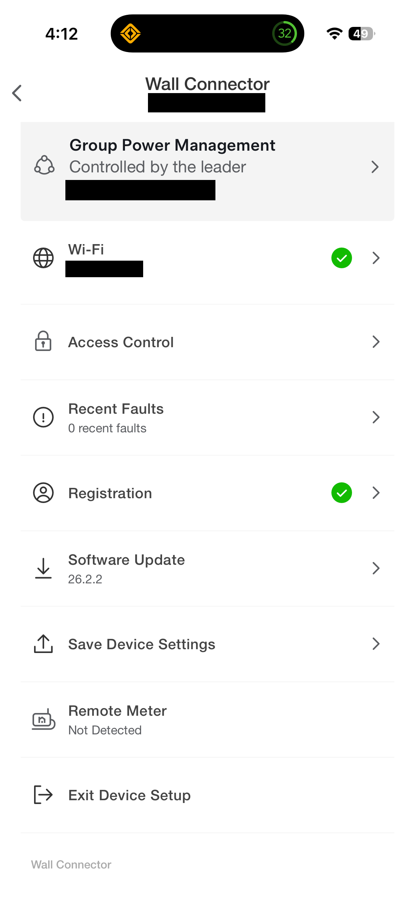
Ugh. Looks like I’ll have to wire it up first.
Also… note the menu option for something called “Group Power Management” - “Controlled by the leader” (TGxxxxx..) - I surmise that the Tesla Gateway (“TG…”) was likely to try to prevent anything else from controlling the WC. I couldn’t turn it off:
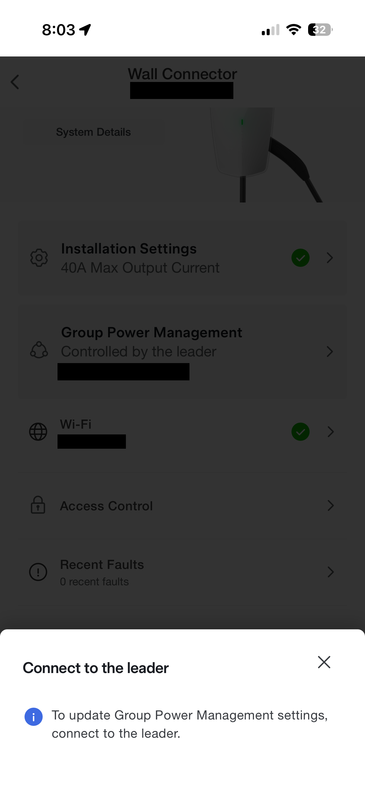
…and recall that there does not seem to be any locally-accessible network interface to the v3 gateway.
I don’t know whether my guess about “Group Power Management” is correct, but after isolating the WC from the internet (per above) and rebooting (and maybe a factory reset? can’t remember), the “Group Power Management” indicator went away.
Having set up an RS-485 connection to an Olimex board via a MAX485 on a previous project, the RS-485 part was straightforward. As discussed at the outset, I’m not giving anyone advice on how to do something like open up a Tesla Wall Connector.
With some nice shielded cable in place for the RS-485 connection… let’s try this again:
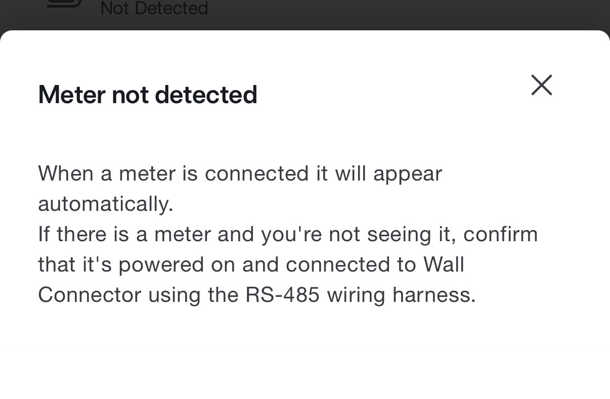
Same message - “Remote Meter” - “Not Detected”
So looks like the remote meter needs to actively identify itself; some kind of logical handshake is required.
At this point in our Odyssey, it’s June 20th.
Claude and I - mostly Claude - wrote the “Sunspec” MODBUS information model code piecemeal, based on a variety of sources. This was a mistake (sure - it was a “learning experience”, thank you very much); “we” left out crucial parts that prevented the Wall Connector from recognizing the emulated remote meter. I should have taken a step back and read the existing available material on successful implementations rather than just prompting Claude to go implement. And an oscilloscope turns out to be handy.
But if you want to learn a little about RS-485, MODBUS, and SunSpec, read on.
Twisted Pairs - or How to Form a Parasocial Bond with an AI Coding Agent as it Wastes Your Time
Why can’t I get the Tesla Wall Connector to recognize the ESP32 - connected via RS-485 - as a “remote meter”?
Just to review, RS-485 is a physical-layer hardware standard for serial communication - a signaling protocol. It uses differential signaling - there is a pair of wires, and the transmitting party on the bus sends opposite voltages on the two wires. The receiver reads the difference between them; this obviates the effect of electrical interference insomuch as the two wires are identically affected by the interference which helps RS-485 work well over long distances or in electrically noisy industrial environments. Like, maybe, near your car charger, solar inverters, and Powerwall.
As for data transfer protocol over this signaling layer, the Tesla Wall Connector and the remote meter communicate via MODBUS - a data transfer protocol that can operate over RS-485. The WC and the “remote meter” use MODBUS-RTU (“Remote Terminal Unit”); data is transmitted in binary (rather than transcoded to ASCII hexadecimal first, as in MODBUS ASCII). MODBUS RTU imposes some timing requirements - frames (individual data packets) are demarcated only by timed silence - 3.5 characters worth of silence at the chosen baud rate. Furthermore, MODBUS imposes a “master/follower” model; followers must not transmit without being specifically requested to by the master.
Finally… in this application, the data transferred over MODBUS is supposed to conform to “Sunspec Modbus” - an open standard that specifies a MODBUS “information model” for energy data.
The Sunspec model stipulates a layout for the model descriptor:
A magic string ("SunS") 4 chars / 4 bytes
A model version 2 bytes = 0x0001
A model descriptor length 2 bytes
Manufacturer 16 registers (32 chars, fixed field)
Model 16 registers
Options 8 registers
Version 8 registers
Serial Number 16 registers
Device Address 1 registerThis block is supposed to start (per Sunspec) at address decimal 40000 or hex 0x9C40. We will ignore for the moment the confusing MODBUS convention of using 1-based register names - i.e. MODBUS people would speak of the contents (of whatever data element size) of decimal address 40000 as “register 40001”…
I call it a “block” but of course, it doesn’t really matter how the data is stored - so long as when the MODBUS master asks for a given register, the follower replies with the relevant data. It’s a logical block.
LucaTNT and jcbottorff from the ESPHome figured out that, in addition to the Sunspec block, registers 0x0088 and 0x00F4 are important (https://gist.github.com/LucaTNT/4adf01a7252386559070023612efa117) - when the WC is reading the remote meter, it polls these registers for the meter’s CT output in watts (0x0088) and amps (0x00F4) for each of the three legs of the circuit. In my case, I have the WC set up for 240v split-phase, as you’d expect in the USA, so I am using just two CTs.
These values are represented as big-endian FP32 floats - each occupies two MODBUS registers (which are always 16 bit words).
The layout in my case - in terms of 32-bit big-endian floats - is:
0x0088:
CT1 power (leg 1) - simply one-half the desired power, in watts.
CT2 power (leg 2) - ditto above
CT3 power - unused, always zero - I have 240v split-phase.
CT4 power - unused, always zero - I have 240v split-phase.
(maybe someone can research the purpose of CT3/4 - another circuit? allowance for 3-phase?)
Total power - the desired power, in watts - in practice, 2x each leg(so that’s ten MODBUS registers in case you’re counting 16-bit words)
0x00F4:
CT1 current (leg 1) - one-half the desired current, in amps
CT2 current (leg 2) - ditto above
CT3 current - unused, always zero
CT4 current - unused, always zero
Total current - the desired current, in amps
(which should be same amperage as each leg...)(so ten more MODBUS registers)
(Flash-forward - over a month after getting this working, I discovered that the code I was using did not reflect the above - it had “reserved” and total power reversed, and didn’t set total current at all. Conclusion - the WC apparently ignores total power and total current, at least for the current-limiting control decision.)
With a sense of gratitude to olaliv and tomiczech and LucaTNT and jcbottorff and Klangen82, I instructed Claude to research the details and code all this up.
Claude wrote usable, working code, but I only figured out much later and after a lot of debugging, breaker-flipping, and oscilloscoping that the research was incomplete and based on some misconceptions (presuming an LLM can have a “conception” to begin with…)
Here’s what happened.
After flashing the ESP32, I started up Tesla One to see if we’ve got a working remote meter emulator:
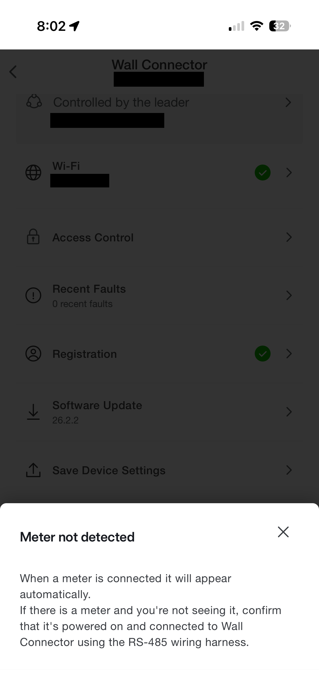
Ugh. What now?
The WC still won’t detect a working meter, despite code to implement the Sunspec block and to answer the power and current queries…
In retrospect, adding better diagnostics on the RS-485 handling would have been a good idea, but it just seemed like something fundamental might be wrong at the physical layer - is the MODBUS/RS-485 connection alive? Which would be hard to diagnose without an oscilloscope… something that I didn’t have.
Turns out there are some very inexpensive yet capable little oscilloscopes out there. I’m pretty paranoid about cheap electronics - who knows what code lies therein (and who is behind it) - but these little gizmos aren’t network-enabled, so the overall threat seems minimal. I bought “FNIRSI” unit from Amazon - https://www.amazon.com/dp/B0FDPYNQBC .
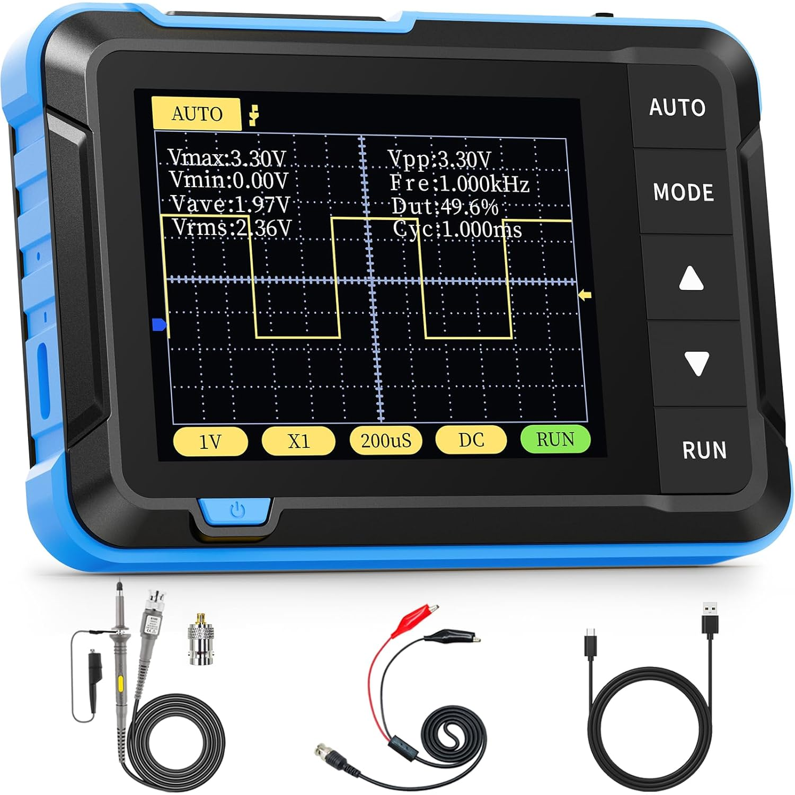
A few days later - on June 19th - after figuring out the scope and connecting it to the RS-485…
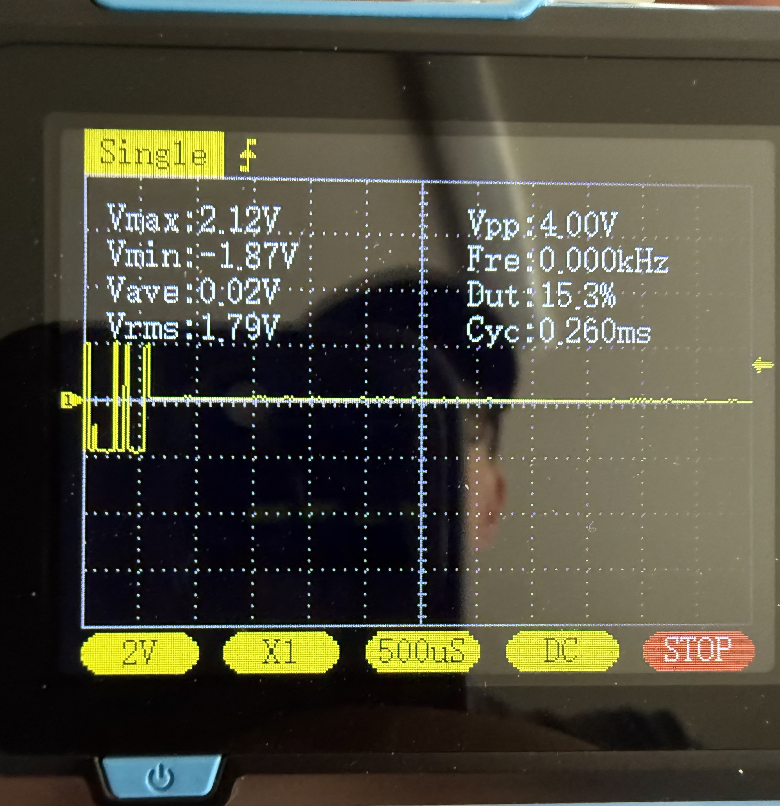
There’s RS-485 traffic.
After adding better logging, we see the WC polling not only the 0x9C42 block, but also address 0x0000. But it never tries to read the power or current from 0x0088 and 0x00F4. Tesla One never shows a remote meter attached.
By this time, Claude had convinced itself - and me - that the WC is looking for some magic value at 0x0000.
OK, so… what do the successful ESPHome implementations return from 0x0000?
A little research reveals - nothing. They throw an exception.
Here’s where I realized Claude was on the wrong track, and I’d better take over the research. Up to this point, Claude had delivered a functional implementation - real-time code, MODBUS handling, all that good stuff - but just missed the boat on the higher-order decision-making. It appears Claude may have been misled by a different project it found online - a DDSU666 meter-emulator and its ESPHome config which had 0x0000 annotated as a reserved “UCode” register. Of course I’m not going to actually blame Claude; this is me misusing a tool.
On June 21st, I found Klangen82’s ESPHome YAML at https://github.com/Klangen82/tesla-wall-connector-control/blob/main/tesla-wall-connector-control.yaml . That revealed that I was missing an entire register block - from 0x0001, length 55 words.
Decoded, it reads:
Serial: 0x000004714B056861
Firmware: "1.6.1-Tesla"
(21-27): "012.00020A.H"
Meter number: "90954"
Model: "VAH4810AB0231"
MAC: "04:71:4B:05:68:61"So this is a device identification block, captured from a real Neurio device. I used it verbatim.
And there’s ALSO a key difference in the Sunspec block - Claude had populated “Manufacturer” as “Neurio”:
0x9C44 = 0x4E65 // "Ne"
0x9C45 = 0x7572 // "ur"
0x9C46 = 0x696F // "io"
0x9C47 = 0x0000 // null terminator(Looking into this after the fact, I discovered that Claude did not find the “Neurio” manufacturer string from an official SunSpec spec reference. It came from a web search result that yielded generic Modbus/SunSpec explainer content. Claude either found a misleading source, or straight up hallucinated that “Neurio” was the right content. Looks like I am going to need to get this thing under deposition to get straight answers out of it…)
Anyway, it’s not supposed to be “Neurio”. Per Klangen82’s code, it should read “Generac” - Generac acquired the Neurio brand at some point.
So now I have:
g_sunspec_regs[4] = 0x4765; // "Ge"
g_sunspec_regs[5] = 0x6E65; // "ne"
g_sunspec_regs[6] = 0x7261; // "ra"
g_sunspec_regs[7] = 0x6300; // "c"
// indices 8-19: null pad (zeroed)Further, the length of the Sunspec block is 66 words, not 65 words; Claude had gotten confused on the register numbering!
Trying that… …WC immediately polls 0x0001-55 and 0x88/0xF4!
And now Tesla One says:
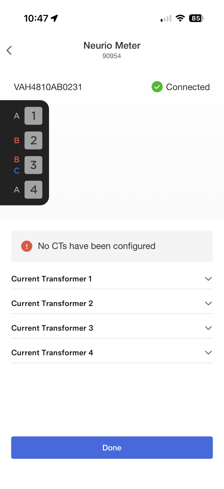
Progress!
But - after configuring the CTs in Tesla One:
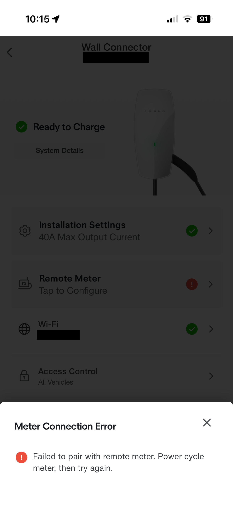
I reset the WC (flip breaker off for 60 seconds) - Tesla One came back with:
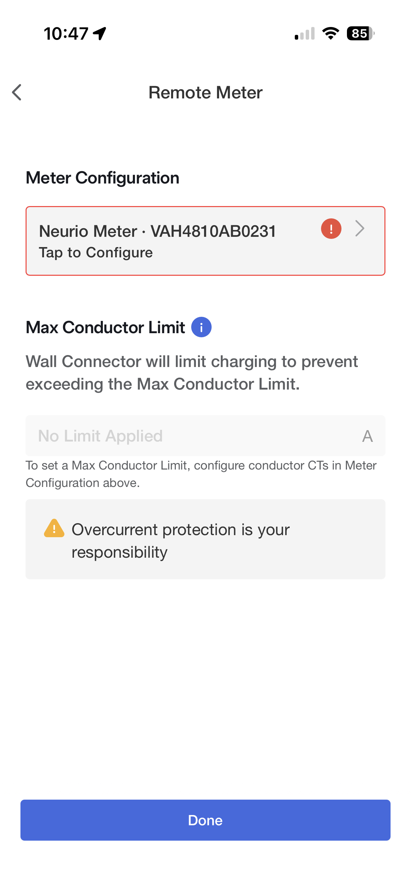
On to implementing charge control - on June 22nd.
On a non-export system, with power metrics alone you can’t know the generation ceiling until you exceed it, which makes control logic difficult. And we have it from the community (and later, experiment) that downward control is either unreliable or impossible. Further, on my system as configured, the Powerwalls want to monopolize solar in the morning. Finally, exceeding the generation ceiling can trigger a “collapse” in solar generation and spike in grid import, resulting in an unusably unstable control loop. But I choose to implement anyway and try to smooth out the behavior as much as possible with hysteresis and heuristics before moving on to tackle the solar ceiling and downward control challenges.
These are the parameters:
| Goal | what we serve | resulting available | headroom is measured vs |
|---|---|---|---|
| Start at 8A | fuse − 8 + actual | 8A (absolute) | zero — absolute setpoint |
| Maintain | fuse − 0.5 | actual + 0.5 | the car’s current draw |
| Increase to 24A | fuse − 24 + actual | 24A (absolute) | zero — absolute setpoint |
| Decrease | (no set target works. spoiler alert: I figured out a way; read on) | ||
| Stop | fuse + 2 | actual − 2 | the car’s current draw |
Based on olaliv and tomiczech’s work, it seems we can nudge the charge current UP, but - in WC firmware 26.2.2 and later - maybe not down.
But for now, let’s assume we’ll eventually be able to find a way to nudge current down - after all, the (real) Neurio remote meter device is still supported; there just has to be a way. In the meanwhile, we can just drop to zero and ramp up again, at the (potentially concerning) cost of contactor wear in the WC and the vehicle.
So what should the control loop be?
Recall that, with a non-export system, you can’t really know how much solar is available - when the system is producing more energy than demanded, the Tesla energy system de-tunes the inverters to avoid export. And, as I mentioned at the beginning, this system seems very touchy about loads that suddenly draw more than the available solar - they go straight to grid, and any solar that was driving the load is immediately tamped down.
Further, I have two Powerwall 3’s that are going to load up the system in the morning when they want to recharge; how is this going to affect things?
So this seems like a control problem without a clean solution.
With the information directly at hand, there is no upper control limit - you only know when you hit the limit of available solar after that fact. The simplest solution is a control algorithm that slowly ramps up… and up… and up until, upon exceeding available solar the system starts to pull from the grid, and then bumps down (if it’s even possible to bump down without fully shutting off).
Seems like a good enough place to start.
We’ll use the WC’s “/vitals” endpoint to report how much current the WC is sending to the car based on our command. “/vitals” reports the following json (real data here, formatted slightly for legibility):
{
"contactor_closed":true,
"vehicle_connected":true,
"session_s":3943,
"grid_v":249.6,
"grid_hz":59.867,
"vehicle_current_a":24.3,
"currentA_a":0.0,
"currentB_a":24.3,
"currentC_a":0.0,
"currentN_a":24.3,
"voltageA_v":117.3,
"voltageB_v":244.4,
"voltageC_v":117.3,
"relay_k1_v":5.8,
"relay_k2_v":0.0,
"pcba_temp_c":45.0,
"handle_temp_c":43.9,
"mcu_temp_c":44.8,
"uptime_s":3943,
"input_thermopile_uv":-446,
"prox_v":1.5,
"pilot_high_v":5.6,
"pilot_low_v":-11.7,
"session_energy_wh":15265.700,
"config_status":5,
"evse_state":10,
"current_alerts":[],
"evse_not_ready_reasons":[1]
}We will use solar production, load, powerwall demand (or contribution), and grid demand figures from Teslemetry to make control decisions.
The first thing I learned is that the Tesla system - which I have configured in “Self-Powered” mode, with 20% reserve - prioritizes using excess solar to recharge the Powerwalls, which have typically discharged down to their 20% reserve overnight.
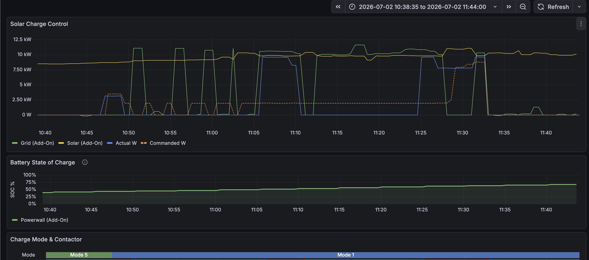
The Powerwall draw from solar is not plotted, but you can see the vehicle charging (e.g. 11:05-11:11 or so) coming straight from the grid, despite lots of solar generation. The Powerwall seems to be soaking up all the solar.
The whole point of the project is to avoid drawing from the grid - but it’s also important to avoid causing vehicle charging to drain the Powerwalls, which we need to power (non-vehicle-charging) loads when it’s dark out:
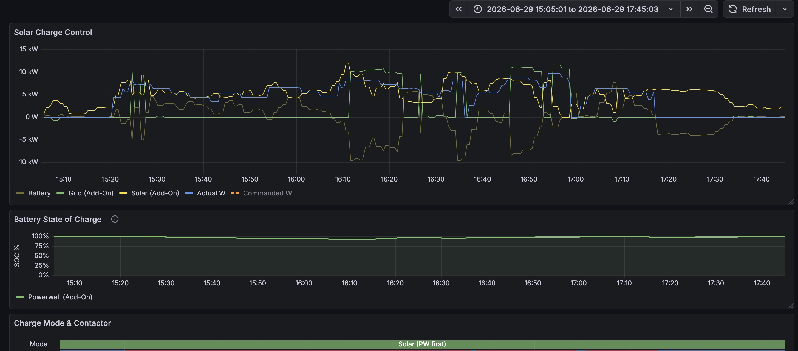
There are several undesirable behaviors above - charging powerwall (or the car) off-grid; charging car from powerwall, etc. If you look carefully, you’ll see the power delivered to the car step DOWN sometimes - how is this happening when we didn’t think it possible? We’ll get there…
More grid-only charging (at 13:00), including a brief “solar crash” at 16:45 or so:
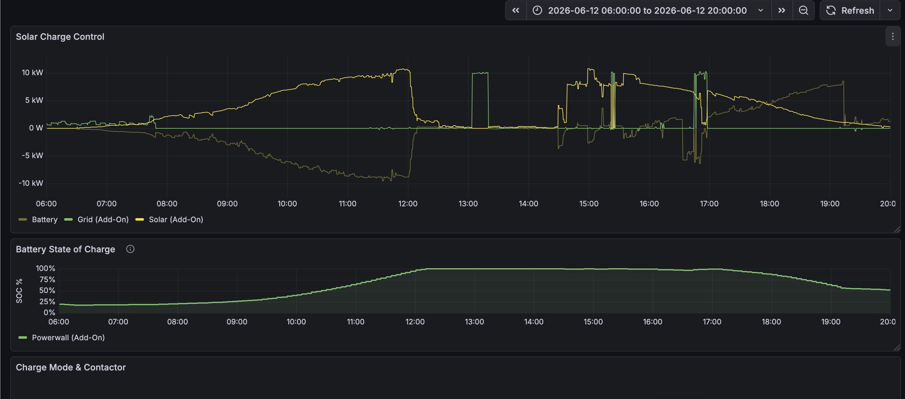
As discussed, the control logic is simple - keep increasing charge rate; after exceeding available production, charging stops. Once we hit the ceiling at least once in a session, there are a lot of ways we could try to estimate available headroom. But there are a lot of confounding factors - solar production could be rising or falling depending on time of day, a cloud could come along, some other load spike could come along. But at least we can get started.
As the Rivian has a minimum charge rate of 8A, there’s no point in signaling available current below 8A; the control logic always starts there. Rivian charge rate increases in 4A increments, so Claude and I implemented a 4A deadband in the charge rate.
I also - eventually - learned that there is no need to “nudge” the WC gently upwards - for me, it works just setting a charge rate. However, without a clear upper bound on available solar due to my non-export system, the initial control algorithm slowly raises the charge rate until it eventually causes grid import.
Here are the inferred rules. I use 24A as an example “increase to” target; could be anything.
| Goal | what we serve | resulting available | headroom is measured vs |
|---|---|---|---|
| Start at 8A | fuse − 8 + actual | 8A (absolute) | zero — absolute setpoint |
| Maintain | fuse − 0.5 | actual + 0.5 | the car’s current draw |
| Increase to 24A | fuse − 24 + actual | 24A (absolute) | zero — absolute setpoint |
| Decrease | (no set target works. spoiler alert: I figured out a way; read on) | ||
| Stop | fuse + 2 | actual − 2 | the car’s current draw |
The J1772 charging standard does not stipulate rate at which charge levels increase or decrease (slew rate), so long as the vehicle reaches the new level within five seconds. An EVSE “Control Stop” must be obeyed within three seconds. And a proximity button press must cut the current within 100 milliseconds - https://www.sae.org/standards/j1772_2022401-sae-electric-vehicle-plug-hybrid-electric-vehicle-conductive-charge-coupler
This is usually immaterial, since we are raising the target slowly, with a 10s polling interval.
Another reason to signal small increments is that the ramp-up logic is sensitive to the CT value from /vitals going stale - the car draw can overshoot the desired target if /vitals data is too old. This is because we compute the served CT using the car’s current from vitals (which is stale), but the WC computes headroom using its own live current… as the live car current ramps up, if we keep serving the same value based on stale vitals, the WC will keep providing more and more current, in a positive feedback loop. This is why a fresh “actual” current value from /vitals is important; we need to exactly negate the WC’s live current value.
I introduced a 90 second waiting period after stop and before restart, just to tamp down clacking on and off of the WC and vehicle contactors. This is very ugly and doesn’t address the core control problem.
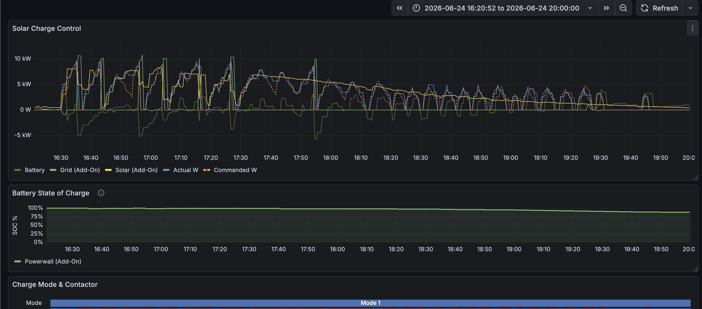
But I still had faith that - eventually - I could solve the “reduce current” problem, so wasn’t going to worry about it yet. There are hints of the eventual solution where you can see step-downs in charge current… why is this working?
A number of people have noticed that aggressively polling the Tesla Wall Connectors “/vitals” endpoint can entirely lock up its wifi unit - or even entirely wedge the Wall Connector. I encounter this problem, explore potential root causes and solutions, and settle on a polling interval of 10s.
Fast-forward to July 1st.
At this point, the system is “sort-of” working.
The timeliness of the control signals - the “/vitals” and teslemetry data - has introduced some problems.
Teslemetry will sometimes serve stale data, plus I don’t want to query more than every 30s or so. I eventually had Claude add code to check for repeated Teslemetry data and stale vitals so as to avoid making control decisions on stale data.
And as others have observed, polling the “/vitals” endpoint of the WC’s web interface eventually causes the WC to stop serving “vitals” altogether. Sometimes, this timeout problem would resolve after waiting for a little while. But sometimes, getting “/vitals” back required a WC reset - traipse out to the breaker panel, flip it off for 60 seconds, back on, see if it’s back, reset again if the whole WC seems bricked (this does happen from time to time…)… no fun.
The information in “/vitals” is really important and the system won’t work without out it – and we want it to be timely. However, the more frequently we poll it, the sooner we get locked out. I had polling at one second intervals; this is not workable; almost every HTTP GET failed.
Theories abound in the community as to what’s going on, but I am guessing resource exhaustion of some kind.
So I had Claude write some keep-alive code and made sure to re-use the connection each time. Nonetheless, I was never able to get polling more frequent than every ten seconds. Vitals readings are reliable now at 10s intervals, although I will get timeouts for up to five minutes after rebooting the ESP32 - even though I always close the connection properly before the reboot. I may try some of the other suggestions I’ve heard - move it to my 2.5Ghz network, deactivate mixed WPA2/3….
Here’s where things stood at this point:
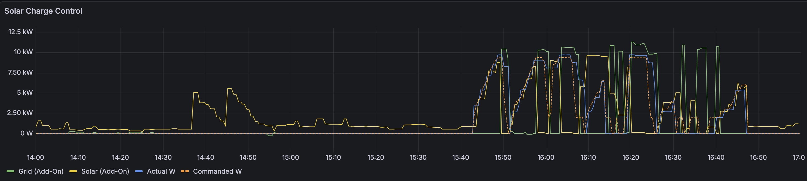
Since we haven’t defined a way to know when the car is going to draw too much solar, we get this sawtooth pattern of oscillations - we draw too much, charging stops, we ramp up again, eventually draw too much, etc. So we’re constantly flipping the actuator - “thunk” - not good.
There’s another behavior visible in this graph, later in the day, that mostly happens once the Powerwall is full and cannot smooth out demand on excess solar. Every now and then, it seems that the mostly-full Powerwall will wake up and demand some solar to get itself back up to full, dropping the amount available to the car, triggering grid import.
And, lastly, there’s a nasty phenomenon wherein sudden draw beyond available capacity completely crashes solar production SIMULTANEOUS with grid draw - see my Tesla app screenshots at the beginning of this post. You’d think drawing from the grid would convince the Tesla logic to wake solar production up again - but sometimes solar generation just “crashes.” Note the episodes of solar production crashing to zero during grid import starting at 15:48 or so.
To reduce potential wear and tear on the actuators, I had Claude add a little hysteresis, at the cost of some potential grid import. This works in a couple ways - first, if there’s a sudden load spike from some other load, don’t immediately stop charging the car; wait to see whether the spike goes away (could be, say, the well pump running for a moment). Second, if charging at minimum amperage (8A), tolerate brief (two minute) dips in available solar, to avoid ending the charge session; maybe there’s a cloud passing overhead. In the graph, you can see “Commanded W(atts)” occasionally staying elevated even during grid import.
We’re still left with an unsatisfactory setup though - we don’t have a principled way to know when to stop increasing the charge rate. Or a way to reduce charge rate.
Fast-forward to July 20th - I was busy and didn’t work on this for three weeks. Was Claude lonely?
I use Claude to write a web service that provides (a) prediction of instantaneous solar generation capacity from first principles (solar geometry), (b) prediction of maximum reasonable charge current based on solar generation (above) and load behavior, and (c) off-peak hours. I later swap out the geometry-based generation prediction with a model that also factors in weather forecast. The prediction is very accurate on sunny days, and pretty accurate when it’s cloudy. Having solar capacity in hand, the control algorithm knows when it should raise or lower the charge current - even though it can’t actually lower the current yet.
Even with the above tweaks, I still faced disasters such as the following:
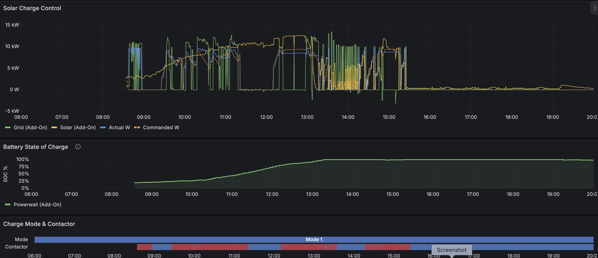
In the morning, the powerwalls are charging hard and out-prioritizing the car for excess solar. While we have no “down” lever… we see a downward ramp in “actual_w(atts)”! what’s going on here? (hold that thought). In any case, we keep exceeding the available solar, force grid import, and then back off.
It’s much worse in the afternoon. The powerwalls are full. Every time we grid import, we seem to crash solar production, and, with the latency in the teslemetry and vitals metrics, the control algorithm oscillates.
If only we knew when to stop increasing charge rate…
We can, of course, predict ROUGHLY how much solar energy could be available at any given time, simply based on solar geometry over the seasons and the nameplate capacity of the panels; we did some of those calculations way back at the beginning of this post. Add a calibration/reality check against known production at a known time on a sunny day, and we have a solar capacity predictor. Of course, this will predict maximum potential solar - doesn’t account for cloud cover - but it’s a start.
I had Claude implement this as a callout to a web service running on a separate host. It wasn’t strictly necessary to do it that way, but this might be a handy service for other projects. While we were at it, I also had CLaude build a web service to serve Peak/Partial-Peak/Off-Peak rate data given my electrical service tariff from PG&E (EV2-A).
The solar predictor uses the Haurwitz clear-sky global horizontal irradiance model. Claude made a good call and chose to implement this directly against stdlib math rather than importing a bunch of libraries; my flat roof makes the math easy.
But we can do better.
Open-meteo.org provides free historical weather data - and predictions - for any lat/long you specify. And both cloud cover and solar irradiance are among the metrics available.
The beauty of using the irradiance forecast is - it already solves the same solar geometry problem as Haurwitz; Open Meteo does the geometry and also factors in the effects of cloud cover.
So which is better? Cloud cover or irradiance?
I had Claude pull all my solar production data - with a major caveat. For accurate solar production data to use to help calibrate and evaluate a predictive model, we can only use data from days known to be completely sunny, and when we are at maximum production (in my zero-export system, meaning there’s a maximum load). Claude used the sunny-day data to calibrate, then correlated all the data against both the irradiance and cloud cover figures from open-meteo, and came up with goodness-of-fit metrics.
In Claude’s own words:
● From estimators/solar_calib.json (calibrated 2026-07-26 over the 2026-04-26 → 07-24 window, on demand-saturated samples):
| Predictor | RMS | Correlation |
|---|---|---|
| Model A — cloud-cover derate (k·GHI_clearsky·(1−a·f^b)) | 0.147 | 0.768 |
| Model B — shortwave irradiance (swr_k·shortwave_radiation) | 0.1476 | 0.785 |
So they’re essentially tied on RMS (~0.147) and irradiance is marginally better on correlation (0.785 vs 0.768). The fit was over 1358 matched samples (598 clear, 504 cloudy).
Why irradiance (Model B) is the recommended one despite the near-tie: two reasons from calibrate_cloud.py:
I have to say, this is pretty *#%% impressive. I wouldn’t have even taken on such an effort; Claude made it more than easy.
With predicted maximum solar production in hand, we can then build in a buffer - 2kW to start with - to absorb any prediction error and load transients, and see how we do.
I implemented this on July 26th:
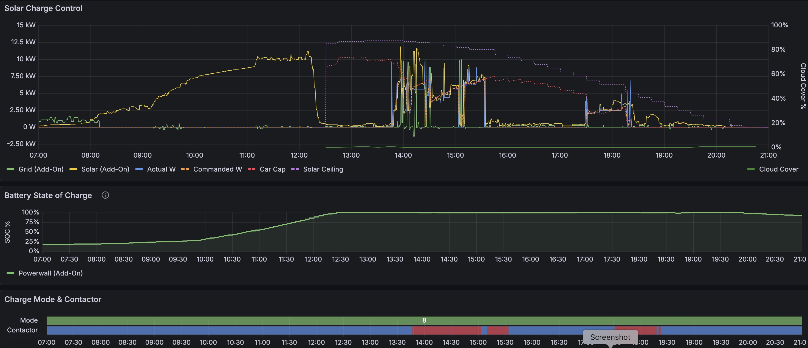
The early charge session - 13:45 or so until I unplugged the car at 15:34 - is pretty noisy. I can’t remember whether there was an implementation bug - there had been plenty by this point, but as I had earlier had Claude implement a syslog writer to a syslog host, diagnosing little problems is pretty easy.
The later session - 17:30 to 18:24 - is pretty clean.
You can see the predictor noticing the load spike at 17:29 and tamping down the “car cap”; there’s a decay function that, as a spike fades into the past, allows the car cap to grow back closer to its “solar ceiling”. (As it happens, this behavior is not quite correct - if that load spike had been some random load (HVAC, maybe), then this would be the right behavior - but the spike is actually the Rivian demanding a bunch of amps before the ESP32 can react; I need to update the predictor to distinguish those cases, and ignore spikes attributable to vehicle charging.) Charging continues, and finally goes a bit unstable once solar production drops - we have no way to gradually reduce charge current.
Also, look how much solar is left on the table - there’s a tradeoff in the 2kW or so buffer between predicted solar and “car cap” - reduce it and compromise stability (prediction could be wrong! a cloud could come! load might spike a little!); increase it and get more stability at the cost of more unused solar on the table.
In the “D’oh!” department - I subsequently realized that I already have, in principle, a perfectly accurate realtime solar production predictor - namely, the output of my OTHER solar install at the same site. That installation is allowed to export, so it never de-rates; I should be able to just apply a scaling factor and have a good realtime proxy for my non-export system. I haven’t implemented this yet, however; the solar irradiance predictor works very well (startlingly close to exact output of the non-export system when it’s at max production when its sunny; a bit less well correlated when it’s cloudy), and I’m more focused on taming the Wall Connector behavior.
Based on the observation that the Rivian’s charge current does not cliff immediately to zero when we send the WC our “STOP” signal (2A overcurrent), I implement a “catch a falling knife” current reduction protocol. To reduce from current X, send the WC a “STOP” signal; then quickly send our “HOLD” signal (0.5A below MCL). So long as the actual charge current hasn’t yet reached zero by the time the WC receives the HOLD, the WC appears willing to hold at whatever the level the current has dropped to. This works with the Rivian’s onboard charger behavior; other vehicles may (just guessing) drop the current so fast that there’s no time to react, or perhaps be unwilling to continue charging immediately after having been told to drop to zero; I don’t know.
It turns out that I accidentally implemented this protocol not once, but twice, as a retrospective data analysis demonstrated. Based on observed behavior, there is room to improve the control precision.
The one thing we’re missing is - some way to bump DOWN charge current without just dropping it to zero, terminating the session, stressing the contactor, etc.
In early June I ran into a bug - I don’t remember what - that was ultimately caused by the fact that ordering the WC to stop charging - by telling it that we’re 2A over the “Max Conductor Limit” - does not instantly cut current to the vehicle. Instead, it drops by an apparently-vehicle-dependent rate. In my Rivian’s case, this is 1.5A-2.0A / second, dropping current from a full 39A to zero in 18-25 seconds. Then the contactor opens.
I figured - what if we signal 2A over Max Conductor Limit, and - within a couple seconds - command a new, lower, charge rate? Like catching a falling knife.
Back in June, I instructed Claude to build a test harness, to try this out in a controlled fashion. Claude completely messed this up on the first try I prompted Claude poorly, implementing a scheme requiring manual intervention, careful timing, and so on. Given how much other work needed to be done (solar prediction), and the sporadic free time available for the project, I put the idea aside.
Meanwhile, as we’ve seen in graphs from June 24th, June 29th, and July 24th, the solution was staring me in the face. I just hadn’t looked in the right places - I produced all of those graphs after the fact, while writing this blog post, based on retrospective queries over the system behavior.
The above graph illustrates it pretty well - the control algorithm is oscillating so wildly trying to stop and restart charging that it actually - completely accidentally - implements this technique. Trying to restart charging before the previous “stop” command was able to bring current to zero resulted in a gradual reduction in charge current.
Later, with more careful prompting, I got Claude to build a test rig that produced the following:
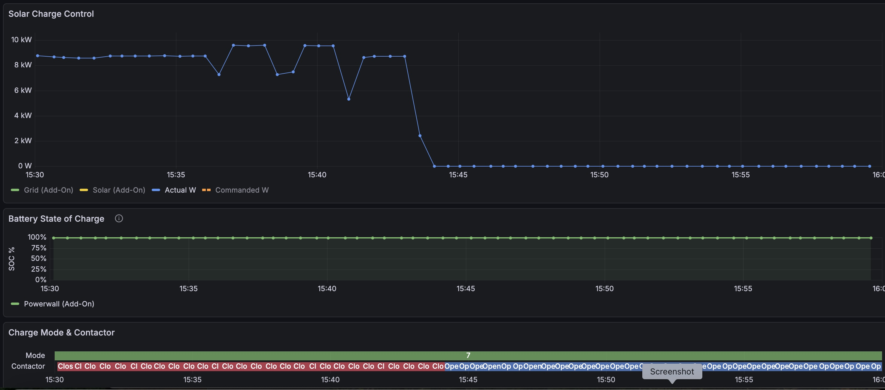
Not too elegant, or with that many data points, but the result is clear - we can command charge current to decrease - the missing piece!
The careful reader will note that the 10A and 20A timings don’t seem to comport with J1772’s requirement that current reach zero within three seconds of EVSE STOP or reach the selected level within five seconds. I measured empirically that the Rivian takes 18-25 seconds to reach a zero charge level from 39A after signaling the WC that we’re 2A over limit. Maybe the WC isn’t treating this as an actual “EVSE STOP” as defined in the J1772 spec. Or maybe the Rivian isn’t strictly compliant. Or maybe something else. Nonetheless, that relatively long, smooth, 1.5A/second down-ramp provides a way to reliably reduce charge current.
Here’s the system working well; The morning and afternoon are a good contrast. In the morning, I had accidentally set the system into a mode where it was not trying to predict available solar - but the afternoon is great with available solar prediction and current reduction logic enabled.
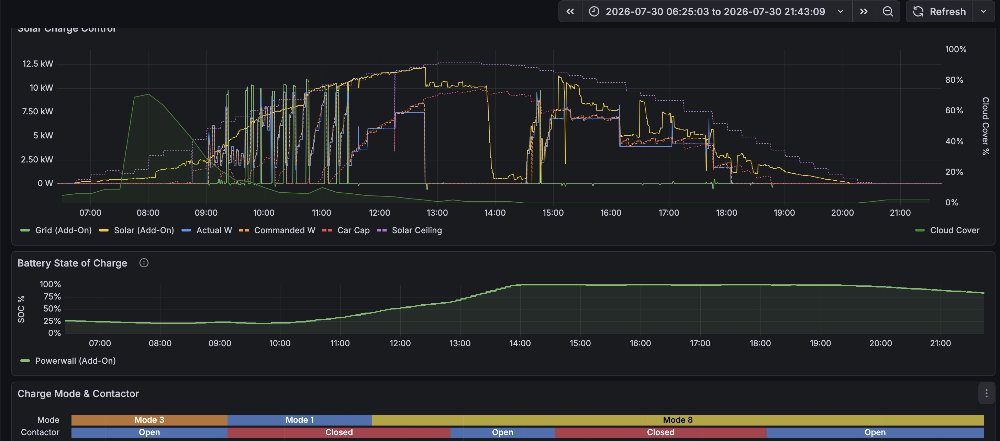
The next day looks even better:
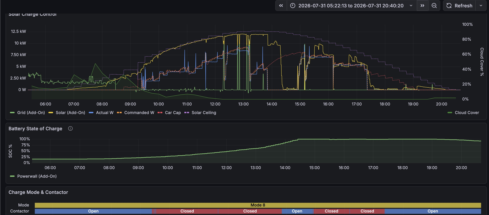
This little project - which shouldn’t even be necessary to begin with - is far from perfect, and there’s a lot of work left to do:
I still think there must be a better “reduce charge current” solution out there; as I said, using a remote meter with Gen 3 Tesla Wall Connector still seems to be a supported configuration; the remote meter does need to be able to tell the WC to smoothly reduce charge current.
Nonetheless, it has been a lot of fun to mess around with the ESP32 and with Claude Code, and satisfying to craft a solution - even if imperfect - to a problem that was really bothering me.
I hope other people find this exploration helpful, and can learn from it, improve on it, and share their own experiences.
Craig